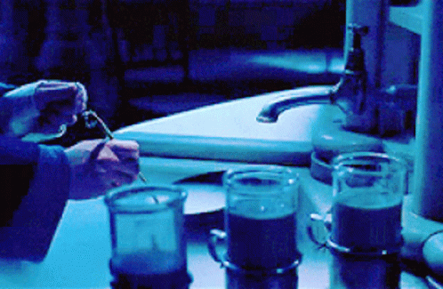

Polyjuice Potion
Description
A family-friendly punch that's perfect for all ages, this polyjuice potion can be whipped up with only three ingredients: lime sherbet, Sprite, and ginger ale!
Ingredients
- 28 ounce lime sherbet, plus more for topping (optional)
- 2 liter Sprite
- 2 liter ginger ale
- green food coloring, optional
- whipped cream, for topping (optional)
Steps
- In a large punch bowl or drink dispenser with spigot, scoop in lime sherbet. If desired, reserve some for topping glasses.
- Slowly pour in Sprite and ginger ale. If drink gets too foamy, give it a quick stir – this should help break up the foam.
- Check the color of the drink. If desired, add a few drops of food coloring to give it a nice green hue, then stir.
- Serve immediately with more lime sherbet or whipped cream on top (both optional).